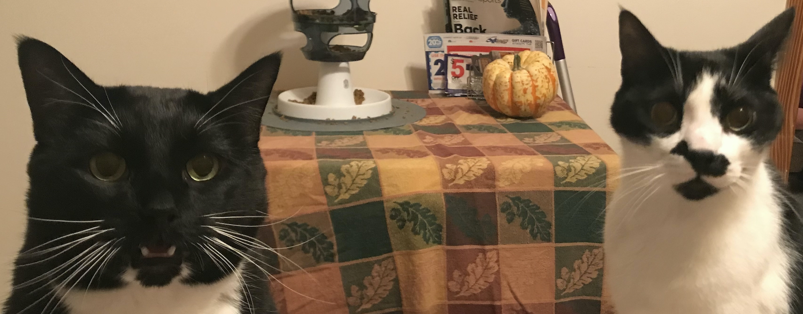

These are my two idiot boys, Hex and Bilbo. Hex is skinny and likes to yowl loudly, especially at night, interrupt Zoom calls, and chase his sister. Bilbo is fat and likes to harrass his siblings and eat. They both sleep way too much.
We adopted her from the Larimer County Humane Society shortly after we moved to Colorado. She makes Bilbo look skinny. Why don't I have a picture of all three of them together? Madeleine hisses and shrieks whenever the boys get too close. It's slowly getting better but she's a huge drama queen about everything.